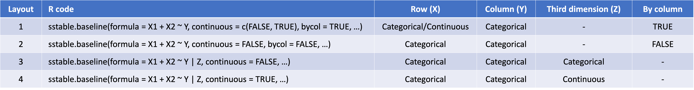

This vignette tries to explain how a formula to supply to function sstable.baseline() can be formulate.
Basic types of table
A table can be used to display summary information of one or several variables. A specific table can summarize information of variable(s) X(s) on all subjects, by groups of variable Y, or summarize variable Z by variable X and variable Y. There are different ways these summaries statistics can be derived, depending on the existence and type of variables X, Y and Z. Figure 1 below summarizes 4 basic types of table and how to specify them using the sstable.baseline() function in this package:

Figure 1. Four basic types of table and the
corresponding sstable.baseline() syntax and constraint on existence and
type of relevant variables